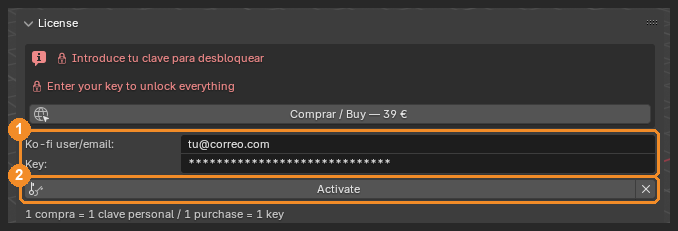
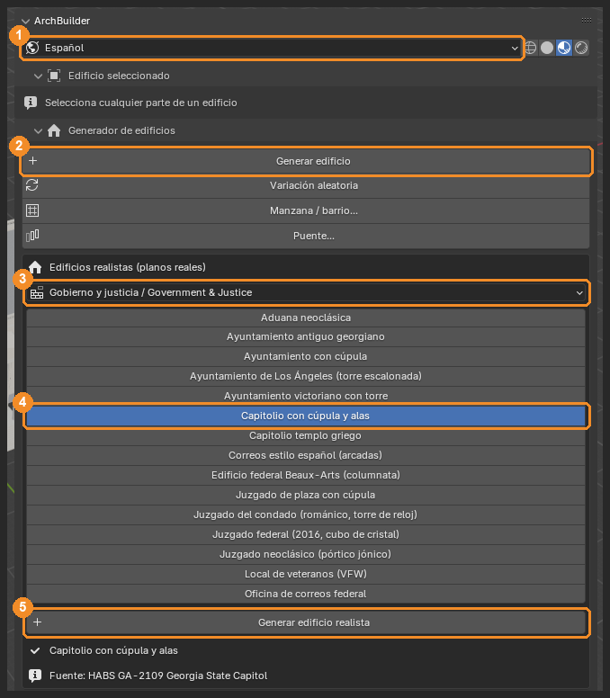
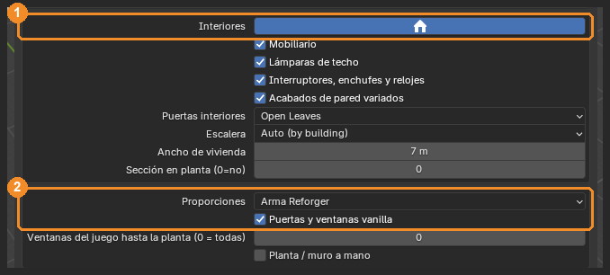
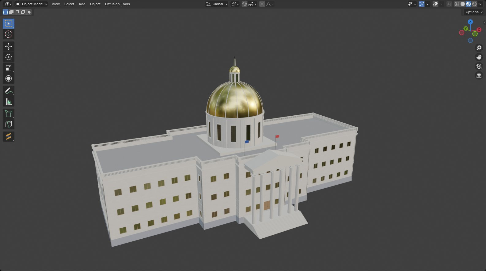
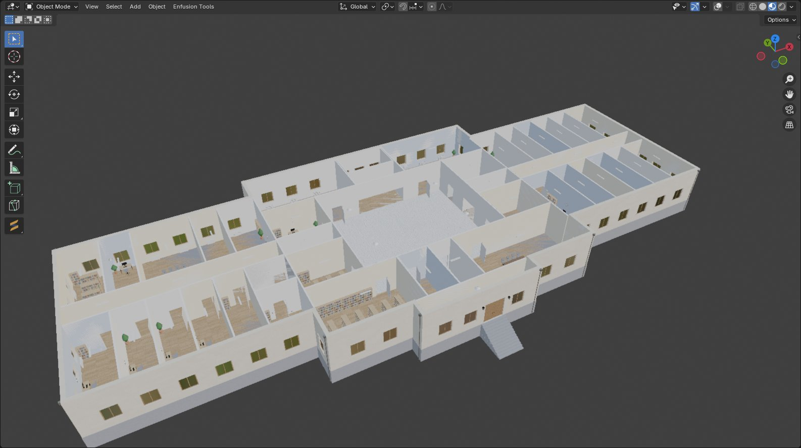
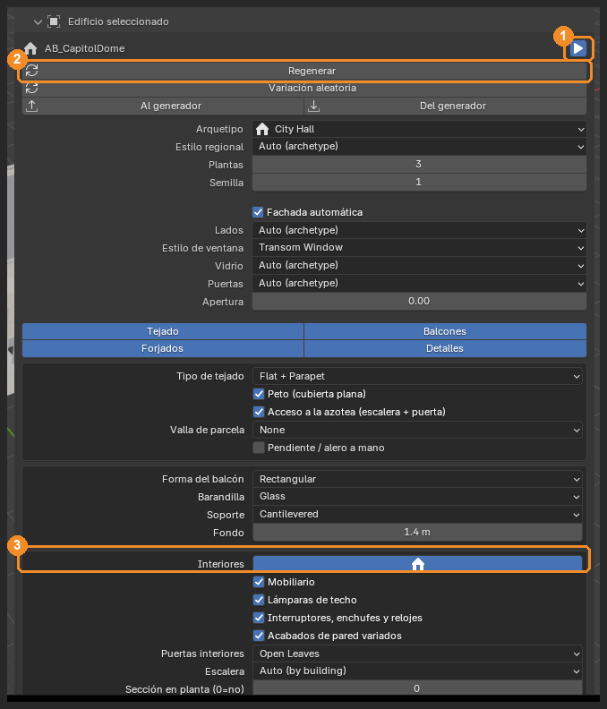
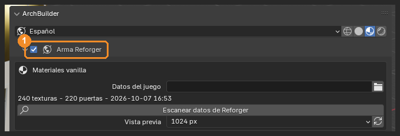
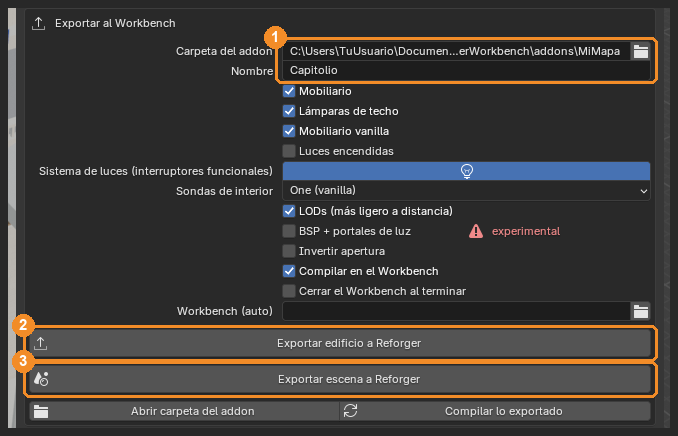

Los controles que importan, en el orden en que se usan: activar la licencia, generar un edificio, poner las proporciones de Arma Reforger, encender los interiores y exportar al Workbench. Los números naranjas de cada captura corresponden a los pasos del texto.
ArchBuilder necesita Blender 4.2 o superior. No descomprimas el ZIP: se instala tal cual.
arch_builder-2.42.0-….zip.Hasta que actives tu clave, la pestaña solo muestra el panel License.
AB27-….
El panel Generador de edificios crea edificios nuevos. Tienes dos caminos: un arquetipo procedural o uno de los 193 edificios realistas.

Más abajo en el mismo panel están los dos ajustes que más importan para Reforger. Ponlos antes de generar.



Selecciona cualquier parte del edificio y arriba aparece Edificio seleccionado, con los mismos controles que el generador pero aplicados a ese edificio.

Al final de la pestaña está el panel Arma Reforger.

Selecciona el edificio (o varios) y baja hasta Exportar al Workbench.
Documents\My Games\ArmaReforgerWorkbench\addons\. Nombre: el nombre del prefab; vacío, usa el del edificio..et en Prefabs/ArchBuilder/<Nombre>/. Con varios edificios seleccionados exporta todos de una vez; el número sale en el botón.Opciones que conviene conocer:
<Nombre>.et desde Prefabs/ArchBuilder/ a tu mundo y pruébalo en modo juego.
El generador solo afecta a edificios nuevos. Selecciona el edificio y cambia los ajustes en Edificio seleccionado, o pulsa Aplicar estos ajustes al seleccionado en el aviso rojo del generador.
El edificio está en proporciones Real World. Ponlo en Arma Reforger con Puertas y ventanas vanilla marcado y regenera.
Activa el botón Interiores (paso 4 o 5) y, en el panel de exportación, Mobiliario, Lámparas de techo y Mobiliario vanilla.
No hay ningún edificio seleccionado. Haz clic en cualquier parte del edificio en el visor y vuelve a intentarlo.
Comprueba que la Carpeta del addon es la de tu mod abierto en el Workbench. Si el Workbench estaba cerrado, pulsa Compilar lo exportado y espera a que termine.